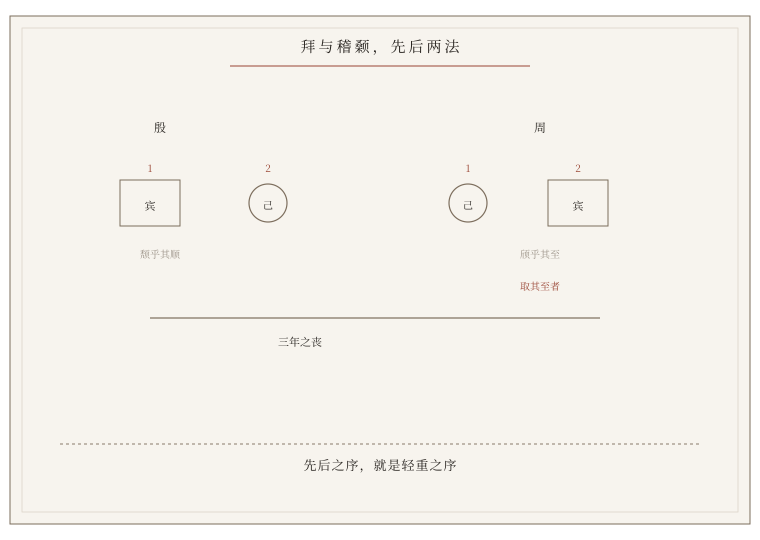

檀弓上 · 三·五 · 第 208 课
孔子曰：拜而后稽颡，颓乎其顺也；稽颡而后拜，颀乎其至也；三年之丧，吾从其至者。注「此殷之丧拜也」「此周之丧拜也」「重者尚哀戚，自期如殷可」。
说什么事：先跪拜还是先叩地，两个次序，两代之礼。
落在哪一层：礼，兼及礼制与礼意。论丧拜之殷周异同。
为何编在此位：上节论一礼之废，此节论两代之择。孔子于殷周之间择一而从，正是檀弓全篇的方法。
【经】孔子曰：「拜而後稽顙，頹乎其順也。稽顙而後拜，頎乎其至也。三年之喪，吾從其至者。」
【注】此殷之喪拜也。頹，順也，先拜賓，順於事也。此周之喪拜也。頎，至也，先觸地無容，哀之至。重者尚哀戚，自期如殷可。
【疏】此一节论殷、周丧拜之异。拜者，主人孝子拜宾也；稽颡者，触地无容也。颓然不逆之意也：拜是为宾，稽颡为己，前宾后己，各以为颓然而顺序也。「颀，恻隐貌也」，先触地无容，后乃拜宾，是为亲痛深貌，恻隐之至也。「三年之丧吾从其至」者，孔子评二代所拜也，至者谓先稽颡后拜，重丧主貌恻隐，故三年丧则从其颀至者也。注「重者至殷可」：三年之丧尚哀戚则从周，自期以下如殷可。郑知「拜而后稽颡」是殷、「稽颡而后拜」是周者，于孔子所论每以二代相对，故下檀弓云「殷人既封而吊，周人反哭而吊，殷以悫，吾从周」，又云「殷朝而殡于祖，周朝而遂葬」，皆以殷周相对，故知此亦殷周相对也。且下《檀弓》云秦穆公使人吊公子重耳，重耳稽颡而不拜，示不为后也；若为后，当稽颡而后拜也。若然，《士丧礼》既是周礼，所以主人拜稽颡，似亦先拜而后稽颡者，《士丧礼》云「拜稽颡」者，谓为拜之时先稽颡。案《晋语》云秦穆公吊重耳，重耳再拜不稽颡，与下篇重耳稽颡不拜文异者，《国语》之文不可用。此即《大祝》「凶拜」之下郑注「稽颡而后拜，谓三年服者」，此拜而后稽颡即《大祝》吉拜，郑注「谓齐衰不杖以下者」。郑知凶拜是三年服者，以《杂记》云「三年之丧，以其丧拜」，丧拜即凶拜；又云「吉拜，齐衰不杖以下」，则齐衰杖者亦用凶拜者，以《杂记》云「父母在，为妻不杖不稽颡」，明父母殁，为妻杖得稽颡也。若然，《杂记》云「三年之丧以其丧拜，非三年之丧以吉拜」，则杖期以下皆用吉拜；今此杖期得用凶拜者，《杂记》所云大判而言，虽有杖期，总属三年之内。熊氏以为《杂记》所论是拜问拜赐，故杖期亦属吉拜。
拜 主人孝子拜宾，为宾而拜。
稽颡 注「触地无容」。以额触地，不复作容仪，哀之极。
颓 注「顺也」。颓然不逆，次序顺遂之貌。
颀 注「至也」，疏「恻隐之貌」。痛之深而至。
从其至者 取那一个「至」——先稽颡而后拜。
孔子说：先拜宾，后叩地，颓然顺当；先叩地，后拜宾，恻隐而至。三年之丧，我取那个「至」的。
此节只三句，句句在比较。第一句给殷礼一个评语「顺」，第二句给周礼一个评语「至」，第三句孔子作断：「三年之丧，吾从其至者」。郑注补出最关键的一句分寸：三年从周，期以下如殷可。可见孔子不是择一代而废一代，是择其所当择。
第一层 拜为宾，稽颡为己 疏说得清楚：「拜是为宾，稽颡为己。」先宾后己，是顺；先己后宾，是至。两个次序，量的都是「谁在先」。礼之先后，从不只是先后，是轻重之序。
第二层 顺与至，皆非贬辞 颓、颀二字，今人读来像形容失态，其实一为「顺」，一为「恻隐之至」。殷礼之顺不是敷衍，周礼之至不是失仪。两代各有所重：一重事之次序，一重哀之深浅。
第三层 择而不废 郑注「重者尚哀戚，自期如殷可」。三年之丧取周之至，期以下仍可如殷之顺。这是古人对礼最成熟的态度：有所取，不必有所废；因事而择，不因人而尽弃。
第四层 九拜之谱 疏借此详列《大祝》九拜：稽首、顿首、空首、振动、吉拜、凶拜、奇拜、褒拜、肃拜，并辨吉拜（齐衰不杖以下）、凶拜（三年服者）之分。一拜之名有九，各有其施。可见「拜」在古人手里不是笼统一个动作，而是一套有刻度的语言。
与今日何干 凡仪式，先做什么后做什么，往往就是价值排序。开会先请谁说话、致谢先谢谁、追悼先念谁，次序一改，意思就变。此节给的提醒是：次序不是形式，是可以被读懂的一句话。
| 左 | 右 |
|---|---|
| 拜而后稽颡 | 殷之丧拜，颓乎其顺 |
| 拜为宾，稽颡为己 | 前宾后己，故顺 |
| 稽颡而后拜 | 周之丧拜，颀乎其至 |
| 先触地无容 | 哀之至，恻隐之深 |
| 三年之丧从其至 | 重者尚哀戚 |
| 期以下如殷可 | 择而不废 |
画一幅左右对照的场面，中间以一道空白的廊柱分开。左侧：一位素服孝子跪坐于席，身前稍远处有一小块供宾站立的位置，孝子先直身拱手（示「拜」），身后地面另有一处浅浅的额触地痕迹（示后之「稽颡」）——用先后两处痕迹表示次序。右侧：同一姿态的孝子，但额已触地，其后才直身拱手，身边地面留拱手时衣袂的折痕。两侧席、柱、地面形制完全相同，只有动作先后相反。不写文字、不画宾。赭色只用在两处触地的痕迹上。
